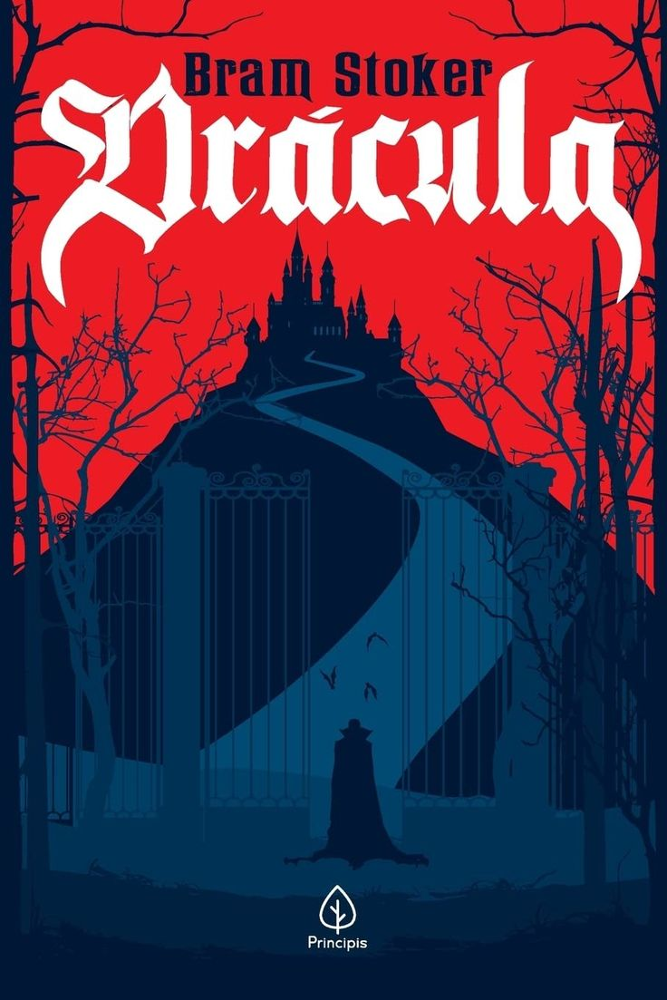

Dracula
Bram Stoker
Gênero:Terror Gótico| Ano:2020| Páginas:507 | Editora:Principis
Sipnose:
“Drácula” é um romance gótico escrito por Bram Stoker, publicado pela primeira vez em 1897. Este livro icônico apresenta a história do famoso vampiro conde Drácula e é narrado através de diários, cartas e recortes de notícias, criando uma perspectiva multifacetada da trama. A narrativa se inicia com Jonathan Harker, um jovem advogado que viaja para a Transilvânia para ajudar o conde a adquirir uma propriedade na Inglaterra. À medida que a história se desenrola, os personagens enfrentam o terror sobrenatural e o poder sedutor do vampiro, dando vida a uma pesquisa sobre a natureza do mal e a luta entre a luz e a escuridão.
"Nenhum homem sabe, até haver sofrido com a noite, quão doce e bem-vindo aos seus olhos e ao coração o amanhecer pode ser."
Sobre o autor:
Abraham “Bram” Stoker nasceu em Dublin, Irlanda, em 1847. Desde a infância, interessava-se por terror sobrenatural. Formou-se em matemática, mas nunca exerceu a função. Seu fascínio pelo teatro o levou a trabalhar como crítico no Dublin Evening Mail e, posteriormente, a gerenciar o teatro Royal Lyceum Theatre, fundado pelo ator inglês Henry Irving. Aos 50 anos, Stoker criou sua principal obra, Drácula. Faleceu em Londres em 1912.